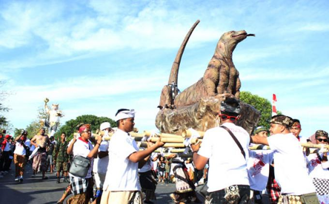

Pada awal bulan maret sekitar 5 hingga 10 Maret, di Labuan Bajo terdapat acara besar yang dinanti-nanti oleh setiap pengunjung, baik wisatawan domestik maupun mancanegara. Festival tersebut dinamakan Festival Komodo. Dalam perayaan festival tersebut, akan ditampilkan berbagai parade kesenian, tarian tradisional hingga pentas seni budaya khas masyarakat NTT.
Tradisi Kepok
penyambutan wisatawan atau turis mancanegara yang bertandang ke Labuan Bajo, pada masyarakat Manggarai biasanya akan mengadakan suatu tradisi penyambutan yang disebut Tradisi Kepok. Warga lokal akan menggunakan atribut adat yang lengkap seperti kain songke, destar (topi adat bagi pria), juga adanya seekor ayam beserta moke minuman khas lokal Nusa Tenggara Timur.Festival Komodo
